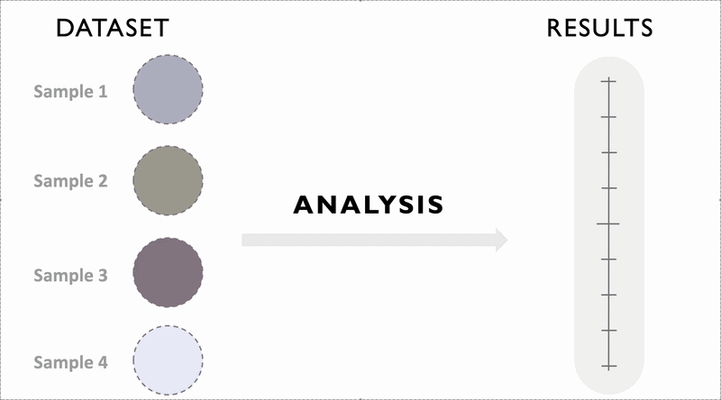
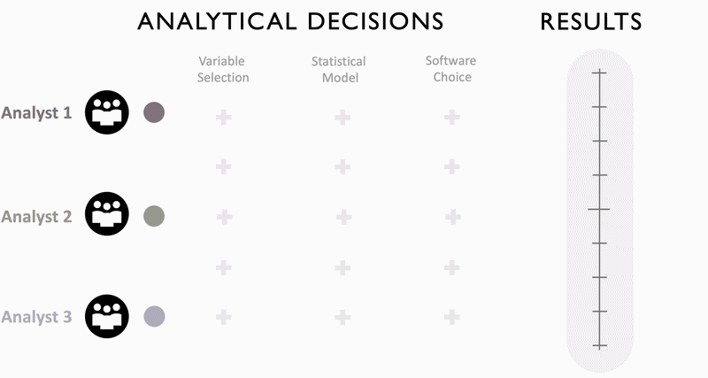

The Openshaw Effect
Understanding the influence of scale in actual geographical research is as important as understanding the concept of scale itself. To demonstrate this point, we reviset perhaps the most famous experiment in GIScience - Openshaw et al. in (1979) examination of the modifiable areal unit problem (MAUP).
For students in the 281a class:
Please access the GitHub Repository for this experiment, which contains all materials needed to reproduce the results, including the R code and data. Please enter the value of the correlation coefficient you obtained from part 1 of the in-class activity in this shared Google Sheet.
The Modifiable Areal Unit Problem
What is an intuitive way to think about MAUP? Data are typically collected over a continuous space1, and there are consequently many different ways that space can be partitioned into areal units for analysis. In fact, there are theoretically infinite ways to divide a study area. In most instances data are very often aggregated and reported using just one, or a small set, of units. However, these units can also be aggregated into larger units in many different ways. This ability to chose units1 is the center of the modifiable areal unit problem, identified by Yule and Kendall (1950), who emphasized that results depend on the choice of spatial units.
The MAUP consists of two interrelated problems:
- The Scale problem: results change when data are aggregated into larger spatial units, which changes the number of units.
- The Aggregation problem: results change when the same number of units are grouped differently.
Although scale differences are the most obvious manifestation, the aggregation problem is equally important. Even when the number of zones stays the same, different ways of grouping the base units can lead to different results.
We can also distinguish between two types of spatial arrangements:
- Zoning systems: contiguous areas (what we typically use in spatial analysis)
- Grouping systems: non-contiguous areas
A zoning system can be seen as a special case of a grouping system with an added contiguity constraint. Since most spatial analyses rely on contiguous regions, we focus primarily on zoning systems, while using grouping systems for comparison.
Openshaw’s First Experiment
In the 1970s, Openshaw et al. conducted a series of experiments to illustrate the significance of the MAUP. The first experiment examines how correlation coefficients change under different areal aggregations using data from Iowa, USA.
The basic areal units are the ninety-nine counties of Iowa. For each unit, there are two measures, the dependent variable is the percentage vote for Republican candidates in the congressional election of 1968 and the independent variable is the percentage of population over sixty-years old recorded in the 1970 US census. At the county level, the correlation between these variables is 0. 3466 over the set of ninety-nine counties. This value is specific to this particular set of spatial units.
In the first part of this experiment, Openshaw aggregates the 99 counties into six larger units in different ways. Differences between the correlations computed from these six unit sets and the results and the original county-level correlation illustrate the scale problem. Differences among the different six-zone aggregations reflect the aggregation problem. The key finding of the experiment is that the correlations vary substantially depending on how the aggregation is done (Table 1). The “official” aggregation (congressional districts) produces a lower correlation than the county-level value, while other aggregations produce higher correlations. This leads to an important (and slightly uncomfortable) implication: If a researcher wants a higher correlation, they can often obtain one simply by choosing a different zoning system.
{kind=link}
Table 1: Some effects on the correlation coefficient of different areal arrangements of the lowa counties into six zones.
In the second part of the experiment, Openshaw moves beyond a few selected aggregations and instead systematically explores the full range of possible outcomes. Using an automatic zoning algorithm, he generates many alternative ways of aggregating the Iowa counties into different numbers of zones or groups. This approach allows him to approximate the maximum and minimum possible correlation coefficients at each scale. The results show that at coarser scales, when counties are aggregated into a small number of zones, the correlation can vary across a very wide range, even spanning from strongly negative to strongly positive values. As the number of zones increases and the scale becomes finer, and this range of possible correlations narrows (Table 2).
{kind=link}
Table 2: Maximum and minimum values of the correlation coefficient.
At the same time, clear differences also emerge between zoning systems (which enforce contiguity) and grouping systems (which do not). Zoning systems tend to produce distributions of correlation coefficients with less spread and less bias relative to the original county-level correlation. This pattern can be explained by the interaction between spatial autocorrelation in the data and the contiguity constraint imposed by zoning. Because nearby areas tend to be similar, grouping contiguous units preserves some of the underlying spatial structure, limiting how extreme the resulting correlations can become. Overall, this part of the experiment demonstrates that while aggregation can produce a wide range of results, the extent of this variability depends on both the scale of aggregation and the spatial structure imposed by the aggregation scheme.
In the third part of the experiment, Openshaw shifts the focus from correlation coefficients to a more fundamental question: how does aggregation change the variation observed in the data. When smaller spatial units are aggregated into larger ones, some of the original variability is inevitably lost. This can be understood by decomposing total variation into within-zone and between-zone components. As aggregation occurs, the variation within zones is averaged out and effectively disappears, leaving only the variation between zones. As a result, the total observable variation decreases as the level of aggregation increases. This loss of variation provides an important mechanism through which aggregation affects statistical relationships, including correlation coefficients.
However, Openshaw goes further by showing that aggregation does not affect all variables equally. This leads to the concept of differential loss of variation, which refers to the fact that different variables may lose variation at different rates when aggregated. Because correlation depends on the relative variation of the variables involved, unequal losses of variation can lead to changes in correlation that are difficult to predict. For instance, if one variable loses variation more rapidly than another, the apparent strength of their relationship may increase or decrease depending on the direction of this imbalance. Importantly, the experiment shows that there is no consistent or systematic relationship between correlation coefficients and the loss of variation. Instead, the observed outcomes depend on a complex interaction between spatial structure, autocorrelation, and the way aggregation redistributes variation across variables. These results help explain why the correlation coefficients calculated earlier in the experiment are so variable. They also reinforce the broader point that statistical relationships in spatial data are highly sensitive to how space is partitioned.
Reanalysis of Openshaw’s First Experiment
Following the methodology described by Openshaw in the original chapter, we recreated the experiment in R. Due to data availability constraints, we are unable to reproduce Openshaw’s exact results. Instead of congressional election data, we use presidential election data, which yields a baseline correlation coefficient with the 1968 election results of approximately 0.22. Using this as our starting point, we conducted 1000 simulations for both zoning and grouping systems and visualized the resulting loss of variation under different aggregation schemes. Despite differences in the data, the patterns we observe closely match Openshaw’s original findings.
If you are interested in the details of Openshaw’s first experiment, including the implementation of the zoning algorithm, you can explore our R-based implementation. The GitHub repository containing all materials needed to reproduce the experiment can also be found here.
Click here to open in full page
Taken together, the first experiment demonstrates that statistical results in spatial analysis are highly sensitive to how data are aggregated. Even when using the same underlying data, simply changing the scale or the way spatial units are grouped can produce dramatically different correlation coefficients. At coarser scales, a wide range of outcomes is possible, while at finer scales results become more constrained, though not necessarily stable. Differences between zoning and grouping systems further highlight that spatial structure plays an important role in shaping these outcomes.
At a deeper level, the experiment reveals that these variations are driven by the loss of variation that occurs during aggregation, and more importantly, by the unequal (differential) loss of variation across variables. Because this loss is neither consistent nor predictable, there is no systematic relationship between aggregation and correlation.
Standard and Non-Standard Error
As a brief pivot, and also to situate our discussion of scale within the broader context of uncertainty quantification in GIScience, we now briefly turn to the idea of non-standard error.
As researchers, we face at least two major sources of uncertainty when conducting statistical analyses of geographic phenomena. First, uncertainty arises from sampling. If we repeat the same analysis using different samples, we would observe variation in the results simply because we are drawing only a subset of possible observations of the phenomenon under study. This variability is known as standard error, and it is something we are generally familiar with.

Figure 1: Illustration of standard error.
There is, however, a second type of uncertainty that arises not from the data, but from the decisions we make in designing and conducting our analyses. This is known as non-standard error. Non-standard error exists because there is rarely a single, agreed-upon way to conduct a geographic analysis. Instead, multiple reasonable analytical choices are often available, leading to a branching set of possible analytical paths. Once a particular path is selected, we obtain an estimate and a corresponding standard error. But if we hold the data fixed and instead vary these analytical choices, the resulting estimates may change. The variation across these alternative paths is what we refer to as non-standard error.

Figure 2: Illustration of non-standard error.
Openshaw’s formulation of the modifiable areal unit problem can be understood as a localized and concrete example of non-standard error. To put it simply, Openshaw’s demonstration of how changes in the zoning system alone, which is one of many possible analytical decisions, can produce correlation coefficients ranging from −1 to +1, is a simulated measure of non-standard error.
Geographic analysis involves many such decisions, with scale being only one of them. If scale alone can produce such large variations in results, it follows that other analytical choices may have similarly significant effects. If that is true, when we conduct analyses we are often working within a large “decision space,” where different combinations of choices can lead to different outcomes. Whether we fully understand, explore, and report this range of possible outcomes plays a critical role in the validity of our conclusions. This reality highlights the importance of conducting sensitivity analyses and being mindful of the implications of the decisions we make throughout the research process.
Reference:
O’Sullivan, D. (2024). Lines and Areas. In Computing geographically: Bridging GIScience and geography (pp. 131–138). Guilford Publications.
Openshaw, S. and P. J. Taylor, 1979. A Million or so Correlation Coefficients: Three Experiments on the Modifiable Areal Unit Problem. In N. Wrigley, ed. Statistical Applications in the Spatial Sciences, 127–144. London: Pion.